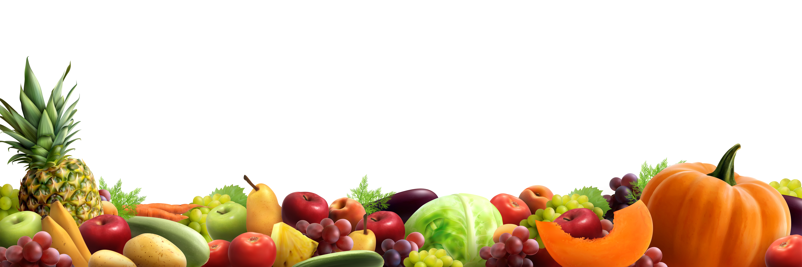

¿Qué son los hábitos alimenticios?
Según la OMS los hábitos alimenticios son un conjunto de costumbres que condicionan la
manera como los individuos o grupos seleccionan, preparan y consumen los alimentos.(Vargas, C. 2021)
Los hábitos alimenticios dependen de 3 importantes aspectos:
Biodisponibilidad: Los nutrientes que nuestro aparato digestivo puede digerir o no. (Vargas, C. 2021)
La educación: Para reconocer cuales alimentos son buenos para nuestra salud. (Vargas, C. 2021)
Acceso: Los productos que se pueden encontrar en los supermercados y si se está en la posibilidad de obtenerlos. (Vargas, C. 2021)
Consejos de buenos habitos alimenticios

- Incluir en la alimentación frutas y verduras:
Se recomienda comer al menos 3 o 4 porciones de frutas al dia.
También incluir verduras en todas las comidas si es posible.(Optometrista, T. 2017) - Reducir el consumo de azucares:
Los refrescos como (Coca Cola, Pepsi, Ginger ale,Yogur, entre otros) y bebidas energizantes tienen un alto contenido de azucares.
Consumir en exceso este tipo de bebidas podría llegar a tener un efecto negativo para la salud. (Optometrista, T. 2017) - Reducir el consumo de sal:
Se recomienda consumir por lo menos 5 gramos de sal al día.
Reducir el consumo de sal beneficia a la salud arterial y cardiovascular. (Optometrista, T. 2017) - Reducir el consumo de grasas trans:
Es recomendable no consumir más de 10% de grasas trans en las comidas diarias.
Se recomienda no consumir las grasas saturadas que se encuentran en alimentos como la matequilla, manteca de cerdo.
También evitar las grasas trans (alimentos procesados,comida rápida, pizzas congeladas,pasteles).
Las grasas no saturadas son un buen sustituto ya que benefician a la salud, se pueden encontrar en el aguacate, frutos secos o aceite de oliva.(Optometrista, T. 2017)